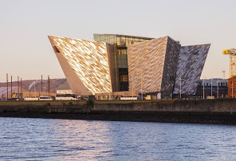
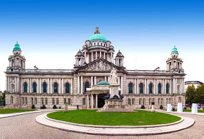
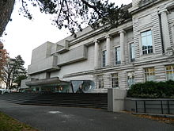

It is the capital and largest city in Northern Ireland. In the 2001 census the population within the limits of the city (the urban area of Belfast) was 276 459 inhabitants, while 579 554 people resided in the vast Belfast Metropolitan Area. This made it the 15th largest city in the UK, and the 11th largest conurbation in that country.
Belfast is located on the east coast of Northern Ireland. The city is flanked to the northwest by a series of hills, including Cavehill Hill, believed to have inspired Jonathan Swift's novel, The Travels of Gulliver. He imagined that it was in the shape of a sleeping giant protecting the city. Belfast is also Located west of the Belfast Lough (Lake Belfast / Belfast Estuary) and at the mouth of the River Lagan which makes it an ideal location for the shipbuilding industry that once made it so famous.
The Titanic Belfast is a monument and museum dedicated to the RMS Titanic in Belfast, Northern Ireland. The museum has with six floors that explore the history of the Titanic, the people and the city that built it.
You can visit reconstructions of the cabins, the decks and the engine rooms and also It projects a direct connection to the public with the remains of the nave. The Titanic Belfast opened on March 31 from 2012
Belfast City Council is the institution in charge of governing the city of Belfast, the capital of Ireland of the North. It is chaired by the Mayor of Belfast and is currently in office Alderman Brian Kingston of the Party Democratic Unionist. Kingston was elected as Mayor on June 1, 2016. The headquarters is located in the plaza Donegall in Belfast city center.

ocated in the Botanic Gardens in Belfast, has around 8,000 square metres of public display space, featuring material from the collections of fine art and applied art, archaeology, ethnography, treasures from the Spanish Armada, local history, numismatics, industrial archaeology, botany, zoology and geology. It is the largest museum in Northern Ireland, and one of the components of National Museums Northern Ireland.
This is Ireland's most famous stew, the beef stew. It is made with potatoes, beef, carrots, onion, beer, vegetable broth, tomatoes, bay leaf, flour, salt, pepper and oil. On our tour of the Mountains of Wicklow, we ended the day at the curious Johnnie Fox’s restaurant. In it you can taste this well-known dish presented as follows.
If you want to learn how to prepare it, I leave you a link to know how to do it
It is the well-known typical Irish dessert, the chocolate cake dipped in whiskey or whiskey. It is usually applied a typical whiskey of the area since in Ireland there are very good ones. Nothing like a good sweet with Irish coffee or tea to end a great day in this country.
If you want to learn how to prepare it, I leave you a link to know how to do it
The famous fish dish with chips could not be missing from our list. Although it's more British than Irish, it has been taken as a popular dish. It is usually hake with a crispy batter and accompanied by potatoes.
If you want to learn how to prepare it, I leave you a link to know how to do it